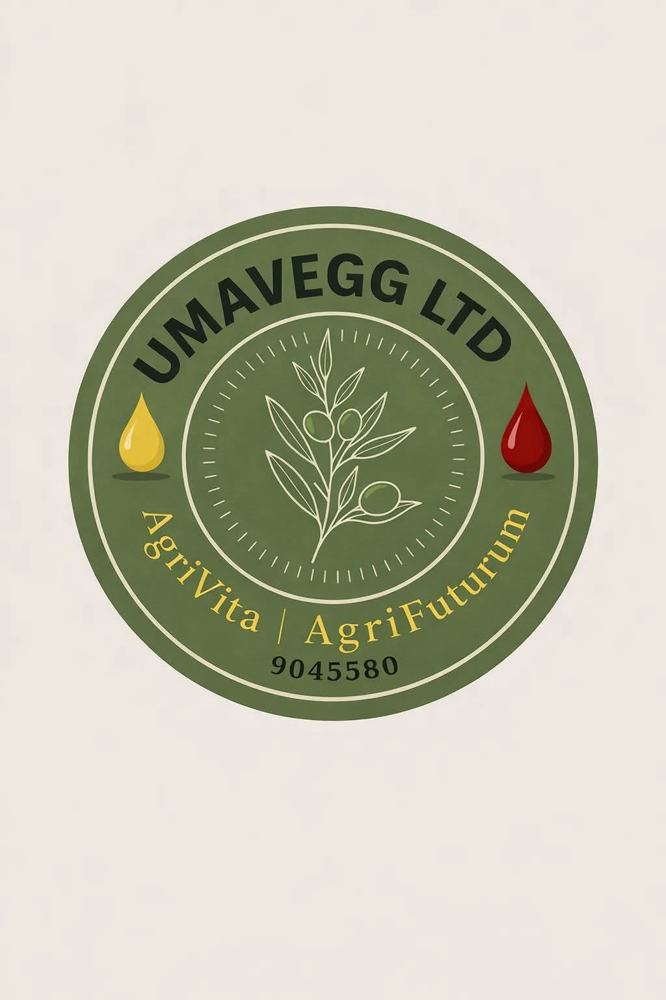
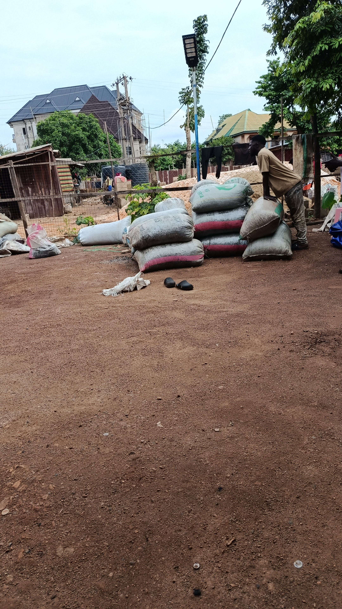
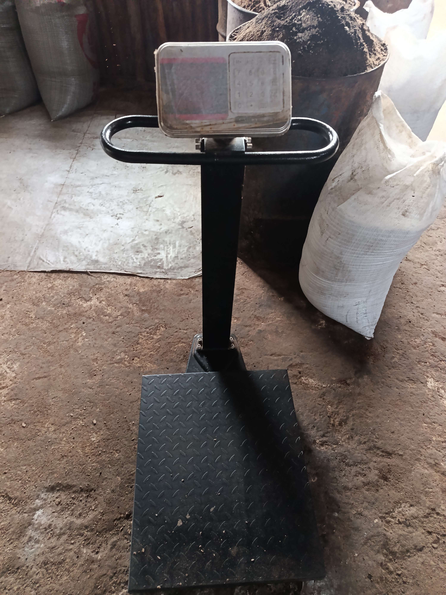

01 — PKO
Palm Kernel Oil
Premium-quality Palm Kernel Oil prepared for bulk industrial use.

UmaVegg LimitedAgrivita // AgrifuturumNigerian agritech · RC 9045580
UmaVegg Limited creates dependable agricultural value for industry through responsible processing, quality products and a technology-driven vision.

About UmaVegg
UmaVegg Limited is a registered Nigerian agritech company (RC 9045580) dedicated to creating value from agricultural resources through efficient processing, sustainable practices and innovation.
We produce premium Palm Kernel Oil (PKO), Palm Kernel Cake (PKC) and Palm Kernel Sludge for manufacturers and industrial users. Our long-term vision is to become one of Africa’s leading agritech companies by integrating technology into agricultural value chains.
Read our story →
Our story
For UmaVegg Limited, that story begins with a man whose journey has always been guided by curiosity, service and an unwavering belief that Africa’s greatest opportunities lie within its own soil.
As a Medical Laboratory Scientist, Umahi Chibuzo Emmanuel built his career on precision, discipline and the pursuit of solutions. He saw an opportunity between communities selling agricultural products with limited processing and industries searching for reliable, high-quality raw materials.
Rather than seeing palm kernels as ordinary commodities, he saw the beginning of an industry: livelihoods to strengthen, local value to create, and a future where agricultural resources fuel manufacturing and economic growth. That conviction gave birth to UmaVegg Limited in Abakaliki, Ebonyi State.
From the beginning, UmaVegg has pursued premium PKO, PKC and Palm Kernel Sludge through responsible processing and an uncompromising commitment to quality. The name represents a belief that agriculture can create lasting value when guided by vision, discipline and innovation. Every bag processed, every drum produced and every partnership formed is another step forward.
We believe agriculture is more than production—it is the foundation of industry, the engine of sustainable development and a pathway to stronger communities. This is our beginning. With every harvest, partnership and milestone, our story continues to grow.
Our direction
To produce high-quality agricultural products while creating opportunities for farmers, manufacturers and communities through efficient processing and digital innovation.
To become Africa’s leading agritech company, transforming agricultural value chains through innovation, sustainability and technology.
Quality. Integrity. Innovation. Sustainability. Partnership.
Products
We handle each stage with care so manufacturers and distributors can source with confidence.
Premium-quality Palm Kernel Oil prepared for bulk industrial use.

Dependable Palm Kernel Cake for agricultural and industrial customers.

Carefully handled Palm Kernel Sludge for industrial users.
Our agritech journey is growing beyond palm kernels. More product lines are on the way.
Services
Efficient processing that turns kernels into valuable industrial products.
Reliable supply for manufacturers, distributors and other commercial buyers.
Bring your kernels to our factory and use our processing capability at a fair price.
Practical guidance for better kernel handling and product quality.
Company announcement
UmaVegg Limited is introducing a mobile crushing system. Operators and experienced palm-kernel businesses that do not yet have equipment will be able to come to our factory to crush their kernels and produce their own PKC and PKO at a fair price.
Ask about contract processing →Technology
We are building toward digital systems that connect quality, operations, producers and markets—making agricultural value chains more transparent and efficient.
Gallery
A glimpse into the people, products and process behind UmaVegg.
Blog / News
Company updates and practical insight from our sector.
A fair, accessible processing option for operators with experience but without crushing equipment.
Talk to our team →Palm kernel nuts that are poorly washed with water can develop fatty acids after cracking. This can reduce the quality and value of the product when selling to crushing companies. Keep kernels clean and properly handled before supply.
We will share updates on products, processing capability, technology and future agro-product expansion here.
Leadership
Medical Laboratory Scientist, entrepreneur and published author. He founded UmaVegg to solve real-world challenges through science, innovation and agriculture.
Contact UmaVegg
Tell us what you need, and our team will get back to you about supply, processing or partnership.